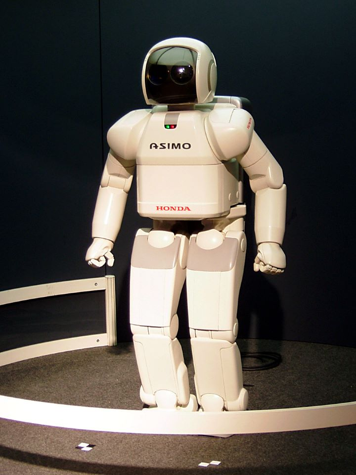

Czym jest Robotyka?
Robotyka-jest to dziedzina nauki i techniki, która zajmuje się problemami mechaniki, sterowania, projektowania, pomiarów, zastosowań oraz eksploatacji manipulatorów i robotów.
Obszar zastosowania manipulatorów i robotów jest bardzo duży. Jedynym ograniczeniem są względy ekonomiczne, hamują one bowiem proces robotyzacji przemysłu (J. Craig 1993, s. 251).
W dzisiejszych czasach roboty znalazły zastosowanie w transporcie, medycynie, produkcji przemysłowej, budownictwie oraz środowiskach nieprzyjaznych człowiekowi, czyli w kosmosie i głębinach morskich.
Mianem robotyki określamy także kierunek badań łączących informatykę i technikę, których celem jest zaprojektowanie inteligentnych maszyn.

Podstawowe pojęcia związane z robotyką
- Robot - mianem tym określamy urządzenie techniczne, które jest przeznaczone do realizacji niektórych funkcji manipulacyjnych i lokomocyjnych człowieka. Robot posiada określony poziom energetyczny, informacyjny i inteligencji maszynowej. Inteligencja ta to autonomia działania w pewnym środowisku.
- Manipulator – jest to mechanizm cybernetyczny, który służy do realizacji wybranych funkcji kończyny górnej człowieka. Manipulator ma dwa rodzaje funkcji manipulacyjną i wysięgnikową. Pierwsza z nich wykonywana jest przez chwytak. Natomiast druga przez ramię manipulatora.
- Maszyna cybernetyczna - mianem tym określamy sztuczne urządzenie, które jest przeznaczone do częściowego lub całkowitego zastępowania funkcji intelektualnych, fizjologicznych i energetycznych człowieka. Mechanizm cybernetyczny jest to maszyna zastępująca czynności ruchowe człowieka.

Jakie znaczenie mają roboty i robotyka w życiu codziennym?
Robotyka jest to stale rozwijająca się dziedzina oferująca rozwiązania pomniejszych lub większych problemów codziennego życia.
Jednym z lepszych przykładów są roboty Roomba, które nabierają co raz to więcej popularności.
Jednakże najważniejsze zastosowanie robotyki jest w przemyśle. Roboty są w stanie wykonywać monotonne pracę
ręczne lub też pracę fizycznie niemożliwe dla zwykłego człowieka. Roboty są również wykorzystywane w celach nauki
np. wysłanie przez NASA robotów Spirit i Opportunity na Marsa w celach badań geologicznych.
Chcesz się dowiedzieć więcej i sam zacząć projektować roboty?
W takim razie kliknij na górze przycisk "Kursy",
aby zapisać się na darmową lekcję z kursu robotyki!
W takim razie kliknij na górze przycisk "Kursy",
aby zapisać się na darmową lekcję z kursu robotyki!